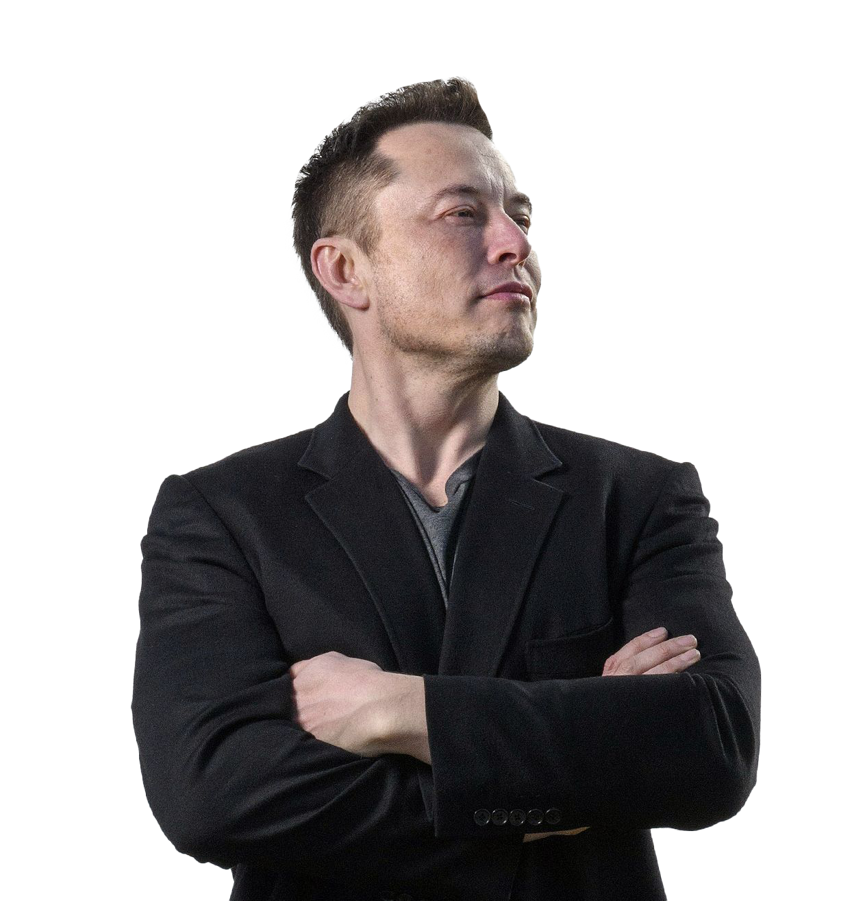

Tesla, Inc., sub conducerea lui Elon Musk, este un lider global în tranziția către energia verde. Compania nu se limitează doar la producția de vehicule electrice, ci joacă un rol esențial în promovarea soluțiilor energetice sustenabile, integrând energia regenerabilă în viața cotidiană.
Unul dintre cele mai importante proiecte ale Tesla este dezvoltarea vehiculelor electrice. Modelele sale, precum Model S, Model 3, Model X și Model Y, nu sunt doar ecologice, ci și performante, demonstrând că mobilitatea electrică poate fi accesibilă și atractivă. Aceste vehicule contribuie semnificativ la reducerea emisiilor de carbon, fiind alimentate de baterii care nu depind de combustibili fosili.
Pe lângă mașinile electrice, Tesla a fost un pionier în domeniul energiei solare. După achiziționarea SolarCity, compania a început să producă panouri solare Tesla și soluții de stocare a energiei, cum ar fi Powerwall. Aceste tehnologii permit consumatorilor să capteze energia solară și să o stocheze pentru utilizare ulterioară, reducând astfel dependența de sursele tradiționale de energie.
Tesla contribuie, astfel, la construirea unui viitor mai verde, combinând inovațiile tehnologice cu sustenabilitatea, și demonstrează că este posibilă o tranziție către un sistem energetic curat și eficient.

Tesla își propune să utilizeze energia verde printr-o abordare integrată, care include trei piloni principali: vehicule electrice, energie solară și stocarea energiei. Misiunea companiei este de a accelera tranziția lumii către energia sustenabilă, reducând astfel dependența de combustibilii fosili și contribuind la combaterea schimbărilor climatice
1. Vehicule electrice
Tesla a revoluționat industria auto cu vehiculele sale electrice, care funcționează exclusiv cu energie electrică, eliminând astfel emisiile de gaze cu efect de seră asociate cu motoarele pe combustie internă. Modelele sale, cum ar fi Model S, Model 3, Model X și Model Y, sunt alimentate de baterii care pot fi reîncărcate folosind surse de energie regenerabilă (de exemplu, panouri solare). În acest fel, Tesla promovează o mobilitate curată și ajută la reducerea poluării atmosferice și a emisiilor de carbon.
2. Energie solară
Tesla nu doar produce vehicule electrice, ci și soluții pentru producerea și consumul de energie curată. După achiziționarea SolarCity în 2016, Tesla a lansat panouri solare Tesla și Solar Roof — o alternativă estetică la panourile solare tradiționale, integrate direct în acoperișurile caselor. Aceste tehnologii permit utilizatorilor să capteze energia solară și să o folosească pentru a alimenta locuințele sau afacerea, reducând astfel dependența de rețelele electrice care sunt adesea alimentate cu energie din surse fosile.
3. Stocarea energiei
Un alt aspect important al viziunii Tesla pentru energia verde este stocarea energiei. Compania produce soluții de baterii de mare capacitate, cum ar fi Powerwall, Powerpack și Megapack, care permit stocarea energiei generate de surse regenerabile, cum ar fi energia solară sau eoliană. Aceste baterii permit utilizatorilor să stocheze energia pentru utilizare ulterioară, reducând dependența de sursele tradiționale de energie, chiar și atunci când producția de energie regenerabilă nu este constantă (de exemplu, pe timpul nopții sau în zilele înnorate).
4. Integrarea completă a sistemelor
Tesla promovează un sistem integrat, în care vehiculele electrice, panourile solare și bateriile de stocare lucrează împreună pentru a crea un ecosistem complet de energie curată. De exemplu, un utilizator care deține atât un Tesla Model 3, cât și un Powerwall și panouri solare, poate produce, stoca și consuma energie regenerabilă, eliminând necesitatea de a depinde de rețeaua electrică sau de combustibilii fosili.
5. Viziunea pe termen lung
Viziunea pe termen lung a lui Elon Musk și a Tesla este de a construi o lume în care energia regenerabilă este utilizată la scară largă pentru a alimenta toate aspectele vieții, de la transport și locuințe până la industrii mari. Tesla consideră că utilizarea pe scară largă a energiilor regenerabile, combinate cu tehnologiile de stocare a energiei și mobilitatea electrică, poate reduce semnificativ emisiile globale de carbon și poate combate schimbările climatice.